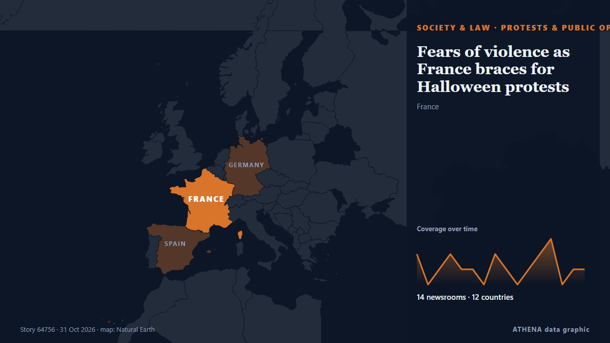

Fears of violence as France braces for Halloween protests

France will deploy some 70,000 police officers in Paris and other cities ahead of a new round of nationwide protests on Saturday, with Interior Minister Laurent Nuñez warning of a "very high risk of… من France 24 English
نشرته بشكل مستقل 13 مصدرًا في 11 دولة منذ 30 أكتوبر، وأول من نشره France 24 English؛ والتغطية تتراجع. يقدّر ATHENA الخطر بأنه متزايد (4.5/10)، ويعود ذلك أساسًا إلى خطورة الضرر الموصوف ونطاقه الجغرافي والقطاعي. الثقة 89٪ (مرتفعة)، وعدد المصادر المستقلة المؤكِّدة: 13، بمتوسط موثوقية للمصادر يبلغ 75٪. وسائل الإعلام حسب البلد: فرنسا (7), بنغلاديش (2), الإمارات العربية المتحدة (1). التغطية: من 30 أكتوبر إلى 31 أكتوبر، 30 ساعة.
لماذا يهم: تغيّر التعديلات القانونية والسياسية الحقوق والواجبات والخدمات العامة لمن تشملهم.
ما الذي تغيّر: 15 تقارير جديدة من 12 غرف أخبار خلال 24 ساعة حتى 31 أكتوبر.
العنوان الأول: French minister warns of 'very high' violence risk as country braces for Halloween protests
تُعرض العناوين بالإنجليزية كما نُشرت.
نظرة سريعة
اختير وقُيِّم وكُتب وفق منهجية ATHENA المنشورة. لا يتدخل أي محرر في الأحداث بعينها. كيف يُنتَج ›
| 30 Oct 06:57 UTC | 2 |
|---|---|
| 30 Oct 08:57 UTC | 0 |
| 30 Oct 10:57 UTC | 1 |
| 30 Oct 12:57 UTC | 2 |
| 30 Oct 14:57 UTC | 1 |
| 30 Oct 16:57 UTC | 1 |
| 30 Oct 18:57 UTC | 0 |
| 30 Oct 20:57 UTC | 2 |
| 30 Oct 22:57 UTC | 1 |
| 31 Oct 00:57 UTC | 0 |
| 31 Oct 02:57 UTC | 1 |
| 31 Oct 04:57 UTC | 2 |
| 31 Oct 06:57 UTC | 3 |
| 31 Oct 08:57 UTC | 0 |
| 31 Oct 10:57 UTC | 1 |
| 31 Oct 12:57 UTC | 1 |
| 30 Oct 08:24 UTC | 3.0 |
|---|---|
| 30 Oct 08:38 UTC | 3.8 |
| 30 Oct 15:13 UTC | 4.5 |
| 31 Oct 13:18 UTC | 4.5 |
لماذا هذه الأرقام
الأهمية
الخطر
الثقة
التغطية — من نشر الخبر ومتى
العنوان كما نُشر · يفتح الأصل- France 24 English · فرنساFrench minister warns of 'very high' violence risk as country braces for Halloween protests
- The Local France · فرنساFrench minister warns of ‘very high’ violence risk at Halloween protests
- The National · الإمارات العربية المتحدة'Night of darkness': French police ready to hunt down masked protesters on Halloween night
- The Olive Press · إسبانياLuxury shops board up windows as Spain braces for French-style ‘Blocus’ protests over Halloween weekend
- France 24 English · فرنساFrance braces for new wave of protests, govt warns of 'very high' violence risk
- Free Malaysia Today · ماليزياFrance boards up ahead of Halloween protests
- The Korea Times · كوريا الجنوبيةFrench authorities fear new street violence at Halloween protests
- The Daily Star — page reader · بنغلاديشHalloween protests: French minister warns of ‘very high’ violence risk
- Bangkok Post — page reader · تايلاندFrance fears new street violence at Halloween protests
- Al Jazeera English · قطرGermany and France brace for protests on Halloween weekend
- The Daily Star — page reader · بنغلاديشFears of violence as France braces for Halloween protests
- France 24 English · فرنساLive: Interior minister says protests across France went well despite clashes with police
- News of Bahrain · البحرينFrance on High Alert as Halloween Protests Raise Fears of Violence
- France 24 English · فرنساFrance braces for Halloween protests, shops board up storefronts
- The Local France · فرنساPolice fire tear gas as thousands march in France
- RFI English · فرنساMinister warns of risk of violence ahead of Halloween 'night of darkness' protests
- Oman Observer · عُمانFrance on alert as fresh protests raise risk of violence
- Hespress English · المغربFrance on alert as Halloween protests raise risk of violence